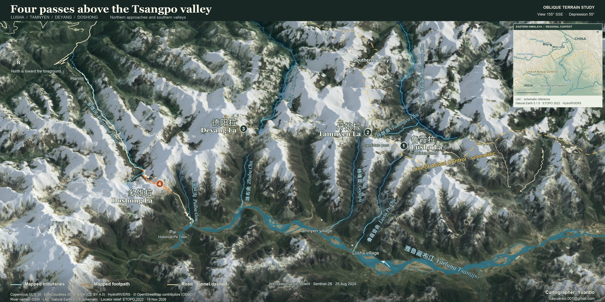

01 / Terrain Cartography · Anthropology of Mobility · Border Studies
Across the Divide
Why mountain passes matter in the eastern Himalaya.
Part of the Corridors before Borders project.
This study maps uncertainty around a historical crossing. How confidently can we identify the saddle marked as Yongyap La on the historical map? I read Bailey’s travel account alongside a digital elevation model and satellite imagery of May snow cover to assess which saddle best fits his description of the crossing.

On the original 1:2,500,000 Survey of India map, 2 mm on the printed sheet represents 5 km on the ground. How precisely can I locate a mountain pass marked on that map?
Explore the terrain studies ↗